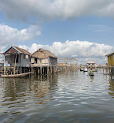
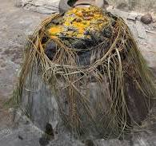
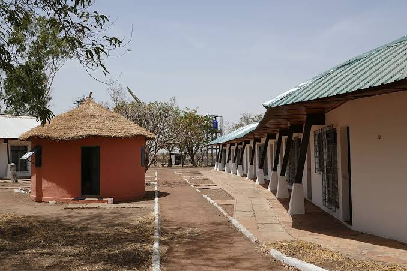
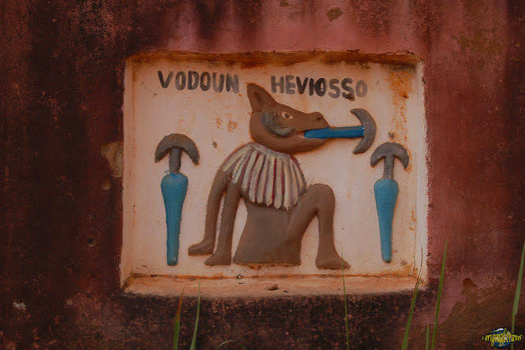
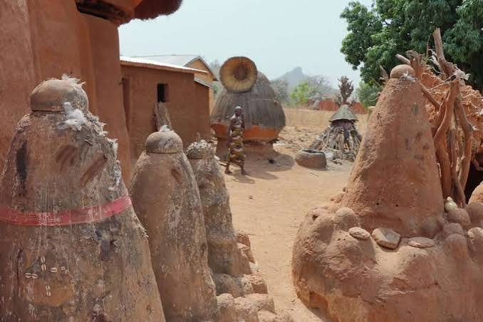
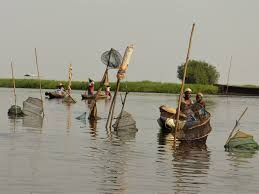
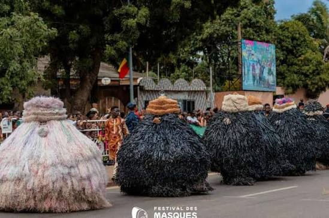
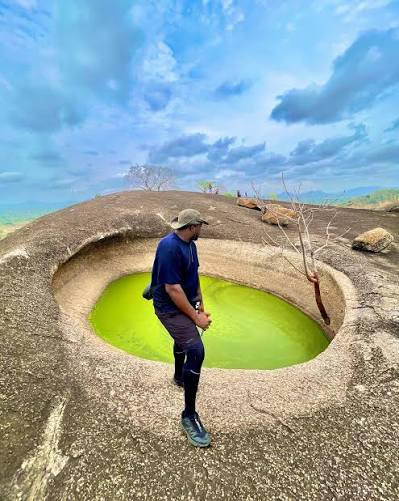

GuideComment visiter Ganvié comme un local
Découvrez les meilleures astuces pour profiter pleinement du plus grand village lacustre d'Afrique : horaires idéaux, guides recommandés, et spots secrets.
Lire l'article →
CultureComprendre le Vaudou au Bénin
Le Vaudou est bien plus qu'une religion : c'est un mode de vie. Guide complet pour aborder cette spiritualité avec respect et curiosité.
Lire l'article →
SafariSafari à la Pendjari : le guide complet
Tout ce qu'il faut savoir pour réussir votre safari : meilleure saison, animaux à observer, équipement recommandé et respect de la faune.
Lire l'article → Détente
Détente
Les meilleures plages du Bénin
De Grand-Popo à Cotonou, découvrez les plus belles plages pour se détendre après un circuit culturel ou un safari.
Lire l'article →
HistoireL'histoire du royaume du Dahomey
Plongée dans l'histoire fascinante du royaume du Dahomey, de sa fondation à son intégration dans le Bénin moderne.
Lire l'article →
ArchitectureLes Tata Somba : forteresses traditionnelles
Découvrez l'architecture unique du peuple Batammariba et la signification culturelle de ces habitations fortifiées.
Lire l'article →
NatureNavigation sur le lac Ahémé
Guide pratique pour une journée de navigation sur le lac Ahémé : pêche traditionnelle, oiseaux et paysages.
Lire l'article →
CulturePorto-Novo : capitale culturelle méconnue
Explorez les musées, l'architecture coloniale et la scène artistique de Porto-Novo, souvent éclipsée par Cotonou.
Lire l'article →
RandonnéeRandonnée à Dassa : les 41 collines
Itinéraires de randonnée, points de vue panoramiques et sites sacrés à découvrir dans la ville des collines.
Lire l'article →